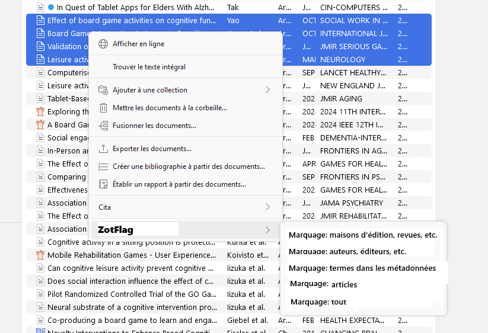
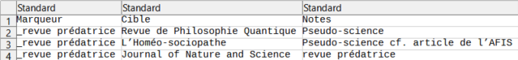
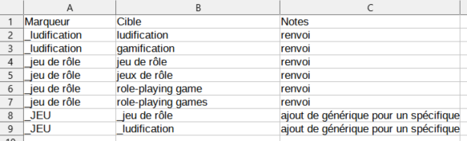
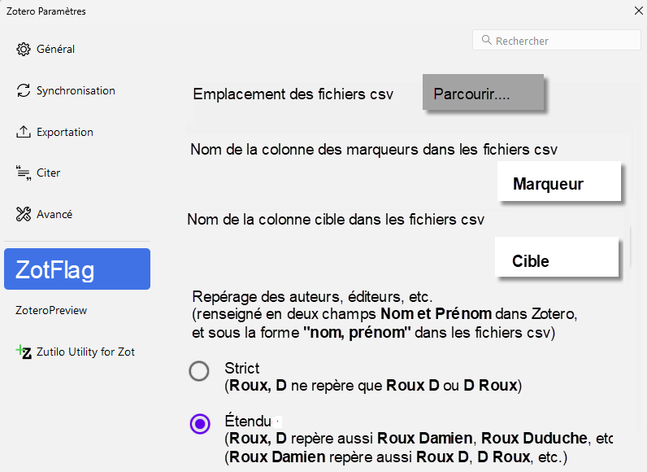

ZotFlag : cahier des charges fonctionnel
Extension Zotero pour la gestion des marqueurs
Pascal Martinolli ![]()
Zotero; marqueurs; thesaurus; mots-clés contrôlés; liste d’exclusion; flagging; drapeautage; enrichissement des données; marquage
1 Note d’intention
- Dans un contexte d’inflation documentaire et de mésinformation (rétractions, prédations, pollution en cascade, etc.) dans la publication scientifique, , il est important d’outiller les chercheurs avec des algorithmes simples leur permettant de marquer (de drapeauter ? flagging) automatiquement des documents selon des critères précis.
- Ajouter un marqueur si un auteur, un éditeur, une maison d’édition, un nom de revue, un mot-clé, etc. apparaît dans les métadonnées d’un élément présent dans sa propre bibliothèque Zotero.
- Dans un contexte de besoin de robustesse et de facilité d’utilisation des marqueurs gérés par les chercheurs dans Zotero, il est important de leur donner un outil simple pour automatiquement valider, enrichir et compléter leurs ontologies et leurs indexations manuelles.
- Ajouter un marqueur si un autre marqueur ou un terme est présent dans sa propre bibliothèque Zotero, permettant ainsi de facilement gérer des renvois et/ou une hiérarchie dans un système de marqueurs contrôlés.
2 Proposition
Un développeur pourrait concevoir une extension pour le logiciel Zotero
En JavaScript
En libre accès et open source
Qui va chercher des informations dans des fichiers CSV
Déposés dans un dossier local de l’utilisateur
Qui contiennent des listes de mots-clés
Et qui ajoute un ou plusieurs marqueurs
Selon les traitements demandés par l’utilisateur
Et selon le contenu des fichiers CSV associé aux traitements demandés
J’aimerai être associé au projet et mentionné en second auteur.
3 Fonctionnement de base
- Une fois l’extension installée, l’utilisateur paramètre l’extension ZotFlag en indiquant le dossier où se trouvent les fichiers CSV.
- Quand il le souhaite, l’utilisateur sélectionne une, plusieurs ou toutes ses références de sa bibliothèque Zotero. Ensuite, il fait un clic-droit de la souris et il choisit de lancer un traitement dans le menu contextuel en cascade. ZotFlag effectue le traitement. À la fin du traitement, les références sélectionnées possèdent de nouveaux marqueurs (voir Figure 1).

4 Traitements
4.1 Marquage : maisons d’édition, revues, etc.
- ZotFlag ouvre et lit le fichier journals.csv (voir Figure 2).
- Pour chaque référence sélectionnée :
- Si le champ journal correspond à une valeur de la colonne cible du fichier journals.csv, alors le marqueur correspondant du fichier journals.csv est ajouté à la référence sélectionnée.
- Ensuite :
- ZotFlag ouvre et lit le fichier publishers.csv.
- Pour chaque référence sélectionnée :
- Si le champ publisher correspond à une valeur de la colonne cible du fichier publishers.csv, alors le marqueur correspondant du fichier publishers.csv est ajouté à la référence sélectionnée.

4.1.0.1 Intentions originales de ce traitement :
Repérer les maisons d’édition prédatrices ou douteuses ou médiocre en les marquant
du sceau de l’infamie.Mettre en valeur les références issues de maisons d’édition ou de revues de haute qualité avec un marqueur spécial (par exemple _TOP).
4.2 Marquage : auteurs, éditeurs, etc.
- ZotFlag ouvre et lit le fichier persons.csv.
- Pour chaque référence sélectionnée :
- Si le champ author (ou editor ou autre rôles) correspond à une valeur de la colonne cible du fichier persons.csv, alors le marqueur correspondant du fichier persons.csv est ajouté à la référence sélectionnée.
4.2.0.1 Intentions originales de ce traitement :
Repérer les chercheurs douteux.
Mettre en valeur les experts reconnus d’un domaine.
4.3 Marquage : articles
- ZotFlag ouvre et lit le fichier dois.csv.
- Pour chaque référence sélectionnée :
- Si le champ DOI correspond à une valeur de la colonne cible du fichier dois.csv, alors le marqueur correspondant du fichier dois.csv est ajouté à la référence sélectionnée.
4.3.0.1 Intention originale de ce traitement :
- Prolonger le travail de Guillaume Cabannac et son outil Feet of Clay qui permet de repérer les études qui citent beaucoup trop d’études rétractées. Rappel : Zotero marque automatiquement les études rétractées et reportées dans CrossRef via RetractionWatch mais il ne peut repérer les études « à fort risque de rétraction ».
4.4 Marquage : termes dans les métadonnées
- ZotFlag ouvre et lit le fichier metadata.csv.
- Pour chaque référence sélectionnée :
- Si au moins un champ de la référence OU un marqueurcorrespond à une valeur de la colonne cible du fichier metadata.csv, alors le marqueur correspondant du fichier metadata.csv est ajouté à la référence sélectionnée.
- Astuce pour ne travailler que sur les marqueurs : utiliser des marqueurs contrôlés avec un caractère spécial (par exemple _ludification ou _jeu de rôle).
- Intentions originales de ce traitement :
- Initier les utilisateurs à la puissance du vocabulaire contrôlé, même pour des projets modestes, en créant rapidement une liste contrôlée de mots-clés et leurs renvois.
- Permettre d’indexer rapidement tout un corpus en cherchant une liste de termes dans les métadonnées (titres, résumés, marqueurs, etc.). Ce sont les lignes annotées “renvoi” dans la Figure 3.
- Permettre de créer un vocabulaire contrôlé en deux niveaux (génériques>spécifique) pour encore améliorer la repérabilité de son corpus. En effet, chaque mot-clé contrôlé peut ajouter un mot clé générique. Ce sont les lignes annotées “ajout de générique pour un spécifique” dans la Figure 3.

4.5 Marquage : tout
- Lance tous les traitements précédents.
4.6 Panneau de paramétrage

NB: je me ravise par rapport à l’image ci-dessus (Figure 4) car on devrait ne pas proposer le repérage Étendu/Strict. À la place, il faudrait ne faire que du strict et demander à l’utilisateur de créer lui-même les variantes de noms à considérer. C’est plus facile à coder et cela engendre aussi moins de sur-indexation de faux-positifs (c’est aussi pour ça que c’est bien de ne pas faire de troncature dans le repérage des termes cibles de metadata.csv).
5 Réflexions
Théoriquement, depuis Zotero 7 il y a une extension qui pourrait peut être couvrir ces opérations. Elle s’appelle Actions Tags mais elle est complexe à mettre en place et à utiliser (hors de portée des utilisateurs de base qui ne savent pas coder en JavaScript).
J’ai fait des tests de concept avec des exportations Zotero en RDF. Le concept fonctionne mais ce n’est pas stable pour les gros corpus complexes (parce que mal codé) et surtout ce n’est pas intégrable dans un flux de travail. Une extension dans Zotero est vraiment l’outil idéal.
Les institutions documentaires et de la recherche sont susceptibles d’être poursuivis pour diffamation s’ils présentent certaines revues ou maisons d’édition ou personnes comme douteuses. Un outil qui laisse au chercheur le soin de se constituer ses propres listes dégage la responsabilité du créateur de l’outil.
Plus généralement, il est une bonne chose de créer des outils ouverts et libres pour mieux contrôler l’information, via des marquages/filtrages semi-automatisées, transparents (ou pas), reproductibles, paramétrables, partageables et simplifiés.